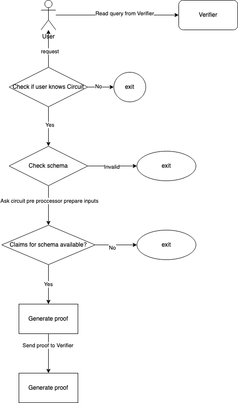

ZK Query Language
Goal of the ZK Query Language
The initial idea is to have a generic circuit with the possibility to do a verification based on user-claims. As circuit setup is not a trivial task and especially, the trusted setup is a challenging thing for regular developers, we have to provide a simple generic query language based on the generic prebuilt circuits.
The use of the Query Language should not be limited to specific atomic circuits; it must be extendable to other circuits too.
Syntax
The first version is set to support only these operations: >, <, =, in and notin. Later on, this list could be extended.
Comparison Operations
- > greater than
- < less than
- = equal to
- notin - matches none of the values
- in - matches one of the values
We have to use some syntax instead of raw signs as it will be inconvenient to use signs such as <, >, and = in JS. For example, $eq can be used instead of = , $gt can be used instead of >,and so on.
Simple Operations
{ <field>: { $eq: <value> } } - equal
{ <field>: { $gt: <value> } } - greater than
{ <field>: { $lt: <value> } } - less than
{ <field>: { $nin: [<value>,<value>] } }
{ <field>: { $in: [<value>,<value>] } }
For atomic claims, these operations could cover a lot of use-cases.
Atomic Circuit
The first implementation will cover only simple atomic verification of one field. It means that we will do query requests only to one data field. But we have to do all the required service verifications too such as check ownership, revocation, expiration, etc. We also need to include some additional attributes specific to the identity:
- Schemas List
- List of Trusted Issuers
- Challenge
Example: A simple query
{
"circuit_id": "attrQuery",
"type": "zkp",
"rules": {
"query": [
{
"allowedIssuers": [
"115zTGHKvFeFLPu3vF9Wx2gBqnxGnzvTpmkHPM2LCe"
],
"schema": [
{
"url": "https://raw.githubusercontent.com/iden3/claim-schema-vocab/main/schemas/json-ld/kyc-v2.json-ld",
"type": "KYCAgeCredential"
}
],
"challenge": 12345678,
"req": {
"birthdate": {
"$lt": 20000101
}
}
}
]
}
}
where:
- allowedIssuers: A list of issuers whom the verifier trusts.
- schema: A list of schemas that claims can use for proof generation.
- challenge: Used to verify that the provided proof belongs to the existing user session.
- req: A query request to the circuit.
Example: Multiple requests in one query (WIP)
{
"circuit_id": "atomicQueryMTP",
"type": "zkp",
"rules": {
"query": [
{
"allowedIssuers": [
"115zTGHKvFeFLPu3vF9Wx2gBqnxGnzvTpmkHPM2LCe"
],
"schema": [
{
"url": "https://raw.githubusercontent.com/iden3/claim-schema-vocab/main/schemas/json-ld/kyc-v2.json-ld",
"type": "KYCAgeCredential"
}
],
"challenge": 12345678,
"req": {
"birthdate": {
"$lt": 20000101
}
}
},
{
"allowedIssuers": [
"115zTGHKvFeFLPu3vF9Wx2gBqnxGnzvTpmkHPM2LCe"
],
"schema": [
{
"type": "KYCCountryOfResidenceCredential",
"url": "ipfs://QmP8NrKqoBKjmKwMsC8pwBCBxXR2PhwSepwXx31gnJxAbP"
}
],
"challenge": 12345678,
"req": {
"country": {
"$nin": [
840,
123
]
}
}
}
]
}
}
A query circuit should accept query requests and perform the following mandatory verifications.
Mandatory Verifications
- Verifying the claim Id ownership (proof is generated by identity, which is the subject of the claim).
- Verifying that the claim is not revoked.
- Verifying that the claim is not expired.
- Verifying that the identity key is not revoked.
Query
- Apply query request
Optional
- Check schema.
- Check the issuer of the claim.
In some cases, schema and issuer are not important and therefore, we can have the possibility to omit these fields.
List of Signals for Circuit
Id Ownership Signals:
signal input id;
signal input hoIdenState;
signal input hoClaimsTreeRoot;
signal input authClaimMtp[IdOwnershipLevels];
signal input authClaim[8];
signal input hoRevTreeRoot;
signal input authClaimNonRevMtp[IdOwnershipLevels];
signal input authClaimNonRevMtpNoAux;
signal input authClaimNonRevMtpAuxHi;
signal input authClaimNonRevMtpAuxHv;
signal input hoRootsTreeRoot;
signal input challenge;
signal input challengeSignatureR8x;
signal input challengeSignatureR8y;
signal input challengeSignatureS;
Claim Signals:
signal input claimSchema;
signal input claim[8];
signal input claimIssuanceMtp[IssuerLevels];
signal input claimIssuanceClaimsTreeRoot;
signal input claimIssuanceRevTreeRoot;
signal input claimIssuanceRootsTreeRoot;
signal input claimIssuanceIdenState;
signal input issuerID;
Verify Claim Revocation Statuses:
signal input claimNonRevMtp[IssuerLevels];
signal input claimNonRevMtpNoAux;
signal input claimNonRevMtpAuxHi;
signal input claimNonRevMtpAuxHv;
signal input claimNonRevIssuerClaimsTreeRoot;
signal input claimNonRevIssuerRevTreeRoot;
signal input claimNonRevIssuerRootsTreeRoot;
signal input claimNonRevIssuerState;
Query Requests:
signal input slotIndex; // index of field slot in the claim
signal input value[valueArraySize]; // value for check
signal input operator; // >,<, =,in, notin operations of CQL
Public Inputs:
challenge,
id,
hoIdenState,
issuerID,
claimIssuanceIdenState,
claimSchema,
slotIndex,
operator,
value,
timestamp
Proof Request Workflow
Verifier (User)
- The verifier prepares a proof by requesting a query to the atomic circuit. Request:
{
"circuit_id": "attrQuery",
"type": "zkp",
"rules": {
"query": [
{
"allowedIssuers": [
"115zTGHKvFeFLPu3vF9Wx2gBqnxGnzvTpmkHPM2LCe"
],
"schema": [
{
"url": "https://raw.githubusercontent.com/iden3/claim-schema-vocab/main/schemas/json-ld/kyc-v2.json-ld",
"type": "KYCAgeCredential"
}
],
"challenge": 12345678,
"req": {
"birthdate": {
"$lt": 20000101
}
}
}
]
}
}
- The user parses a proof request and performs the necessary checks:
- The circuit is known.
- The schema is known.
- Claims by the specified issuer persist in the wallet.
- Get the issuer public state for key non-revocation proof.
- Prepare inputs for the circuit:
- Prepare ownership / claim / issuer / query inputs.
- Use schema to resolve field position in the claim.
- Generate ZK proof.
- Create proof-sharing response protocol message and send it to the verifier.
Flow Diagram:

Next Steps (future enhancements)
- Make it possible to query multiple fields from the same schema, still, it is limited to four available slots, two indexes, and two values. With this combination, we can cover the more advanced use cases.
- Support more query operations.
- Fields combinations.
- Claim combinations.
- Represent JSON-LD document as a tree and store root as a claim. Extend verifications to this new schema. Do an atomic query verification.
- Extended query schema with multifield verifications from JSON-LD.